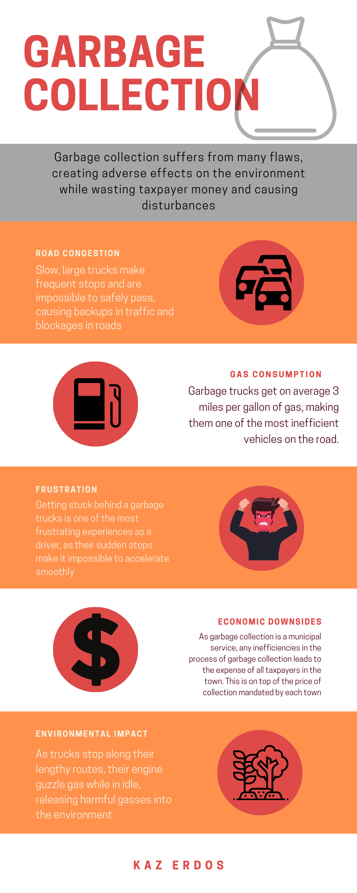
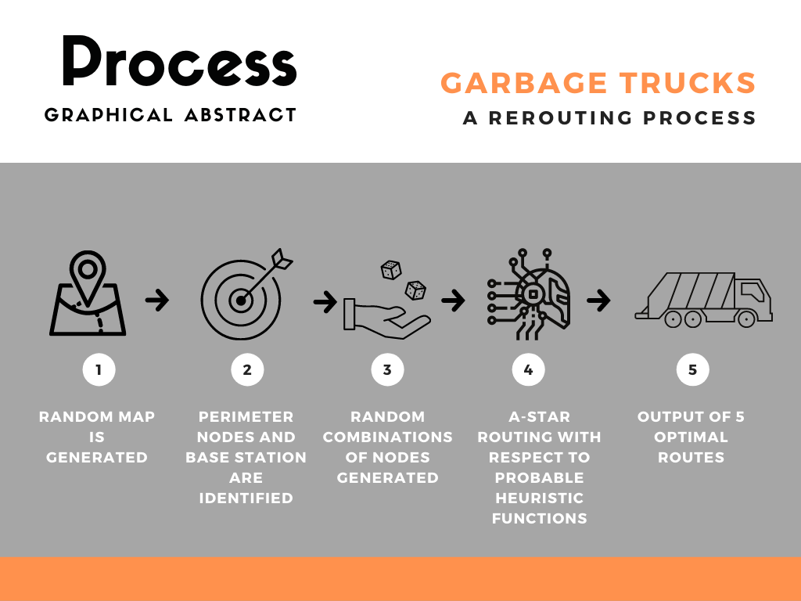

Taught by Dr. Crowthers.
STEM is one of the most unique classes at the Academy, since it lets students have freedom over their creativity and allows us to pursue an individual project. During STEM I, which lasts 6 months, students brainstorm and create their own personal project to present at a fair in February. After that, a select few students are chosen to compete at higher-level fairs. The STEM project is a huge part of our junior year, and it has generated a lot of amazing ideas so far from our students.
Route Optimization of Garbage Trucks to Reduce Traffic with A-Star
Abstract
In cities and towns, municipal waste collection is observably expensive, fuel-inefficient, and congestive towards traffic, desiring improvements in all facets. In this project, the routes of garbage trucks are explored through a novel algorithmic system of garbage collection, which could be applied to current waste collection trucks as well as smaller, less obtrusive vehicles. An algorithm is designed in JAVA that works over a stack of 2-dimensional matrices meant to emulate the intricacies of the road network of a city or town- from the roads, to the waste bins, to the flow of traffic. The algorithm, based off of the shortest-path algorithm known as A-Star Search, considers heuristic, or estimation functions which measure factors including distance, estimated time of travel, probable impact on traffic, as well as others. With the combination of these heuristic functions, the algorithm generates possible routes for garbage trucks to take to collect traffic, and scores these routes based on the factors mentioned previously in a combined percentage. From these scores, the best route can be saved and fed back to the user through a Graphical User Interface. Through extensive testing, it was determined that on average the algorithm was able to generate routes with an average 93.45% waste bin coverage rate. These results indicate that the algorithm is effective at improving the routes of garbage trucks and thus waste management as a whole, as shown by consistent improvement in data. Thus, the algorithm can be used in practical applications to assist in waste collection.
Phrase 1
How do the routes of Garbage Trucks and their size affect traffic in the local area?
Phrase 2
The goal of this project is to engineer a new system for garbage collection, which would be applied to the current routes of trucks used as well as smaller, less obtrusive vehicles.
Background
 Out of all of the common municipal services, waste management stands out as an industry lacking in efficiency as well as cost, with many towns requiring its citizens to pay for the services on top of normal taxes. While the service has been around for countless years, dating back to the 1950s, no major improvements seem to be made, especially in terms of cost and traffic efficiency. With 60-80% of the spending going towards it, the collection phase particularly is historically unoptimized (Karadimas, Papatzelou, & Loumos, 2007). On top of this, the vehicles themselves act as a bottleneck for collection, featuring an astonishingly-low fuel economy averaging just 3 miles per gallon (Zeng & Church, 2009). While these trucks feature technologies, such as automatic collection arms, that are valuable and sometimes necessary for collection, the presence of these vehicles generates a traffic congestion issue, due to their frequent stops along the road during potentially busy hours. Thus, it can be hypothesized that with less time on busy roads, congestion can be relieved by some factor. Routing is a more complicated issue, as it varies widely from town to town or city to city. While it may be true that each routing network is tailored towards its respective town or city, a universal standard is yet to exist, making it difficult to know how much room there can be for improvement. Thus, a method of routing garbage trucks that is applicable for all areas can be designed. Existing work has looked into the waste collection, package delivery, etc. of specific areas with set data and roads for testing (Gunawan et al, 2018). This kind of research, while beneficial to the industry as a whole, suffers from the same problem of overly-specific planning for waste collection. Each area has its own laws, systems of collection, quirks, and desires, making generalization as an extension of these studies very difficult. Furthermore, thousands of these studies cannot be funded and conducted in order to optimize each and every area individually. However, the key concepts and research from a collection of these existing studies can be generalized into a catch-all algorithm that can be used as a base for any future algorithms specific to certain areas.
Procedure

To simulate a road network, a matrix, known as a 2D Array in JAVA, was used to turn roads into grids, with 1 corresponding to a road and 0 filling the empty space. Thus, roads are represented as long strings of connected 1’s in the matrix. A beginning sample space of 10x10 was used, and testing began with a hard-coded environment. Adapting the imported A-Star algorithm to the matrix format was trivial, with individual coordinates being extracted from the grid and turned into Node objects for A-Star to interpret. Many proof of concepts were created during the development phase, with the first being a test of routing between two points on a hard-coded environment.
Now, by manipulating a binary matrix, road environments could be created at will and any two points could be routed with A-Star, which will find the shortest path along the road between the two points.
The Random Environment
For testing, a hard-coded, 10x10 grid was not suitable for collecting data and testing the strength of the algorithm, so larger, pseudo-random environments were created. First, routing space was increased from 10x10 to 100x100. The random road network consists of a series of randomly generated roads which all start and end on opposite edges of the map. (FIGURE for showing the directions and stuff that the roads can take). The road is then made up of randomly-placed continuous points from the starting edge to the finishing edge, moving in weighted random directions, with the True Direction being obviously the most likely direction. These random roads are combined into what is known as a Board, and boards are tested on what is known as a Spread Factor. Four quadrants are measured for their number of road points, and the mean absolute deviation is taken over the four quadrants to produce a Spread Score. Only boards that meet a maximum Spread Score threshold are accepted for testing. This process helps prevent boards that have many condensed roads and large amounts of empty space.
Determining Strategies
In the current model developed, garbage collection is simulated over 5 days (Monday - Friday) of routing, with the first goal being to cover as much area of a given road map as possible. The first strategy to accomplish this will be known as Edge Routing, wherein 5 random combinations of edges are chosen and 5 paths are routed between them. An edge is a point of road on the matrix that is touching the border. While this strategy does well at maximizing coverage, it would imply multiple off-site dump locations with many entries(edges) into the modeled environment.
Each day of routing is designated with a Route ID, which ranges from 2-6. These can be placed on top of the road matrix to create a matrix with values from 0-6 (0 being empty space, 1 being unrouted road). The advantage of Route ID is in the visuals of the board, showing each route as a unique color. This is accomplished with a simple color-choosing method, which assigns a color to each ID and colors the board according to its composition of IDs.
Edge Routing
To optimize the simplest form of the 5-day Edge Routing algorithm, all edge points are collected into a list and all possible combinations of two edge points are created and stored into another master list. In one iteration, 5 random combinations of edges are chosen from the master list and A-Star routes between them. The algorithm collects the percentage of rode points covered as a score and saves the pairs of edges used for routing, known as an Edge Code. After a specified number of iterations (Say, 1000), the Edge Code with the highest score is taken as the optimized route, and is fed back to the user.
Base Routing
The second version of the algorithm, known as Base Routing, improves on the previous version with the inclusion of a Base Point, or starting point for the trucks. Thus, each day of routing begins and ends at the Base Point, which would represent either a dump or a parking spot for the truck. The Base Routing algorithm still uses one of the two edge points found for the Edge Routing algorithm, leaving the other point in memory. Base Routing improves on the applicability of Edge Routing and also gives potential users the opportunity to plant down their source location.
Improvements on Strategies
House Mapping
The first main improvement on the algorithms can be achieved by mapping out the actual homes that need their waste collected, so that coverage of the map can be more accurately measured. Each generated road comes with a randomly-generated House Factor from 0-9, which determines the density of houses along a road. The higher the House Factor, the more dense the road will be with houses. This is achieved by generating a second random number for each point on the road and only placing a house (and waste bin) on the point if the House Factor exceeds the random number. Rather than measuring for total road coverage to compare routes, the algorithm can measure House Coverage (total routes points less than or equal to 1 unit away from a house) to compare possible routes. To store the locations of the houses, a House Matrix is layered on top of the road matrix, so as to prevent loss of data through routing.
Turn Around
Since the Base Routing approach only utilized one of the two randomly generated edges for each route, it is expected that it performs poorly in comparison to Edge Routing. This can be attributed to the truck taking the same route to and from the Base Point. A simple fix was made wherein the algorithm utilizes the second, unused coordinates of an edge point. With the Turn Around method, the truck is routed from the base station to one edge to another edge each day. This significantly increases the route coverage and allows for non-repetitive routes.
Accounting for Traffic
To account for traffic, many variables must be considered, with the ultimate measurable being the Traffic Flow. Running alongside the main algorithm is the TrafficModel object, which monitors the traffic on every road in the environment. Contained in this object are multiple Road objects that are created alongside the randomly generated board. Each road has its own unique identifier (not to be confused with Route ID) and corresponding house density, which was generated during the board creation. Using a simple linear model, and assuming speed limit ranges from 20mph to 60mph, a correlation between house density and speed limit was created.
Next, the Number of Vehicles on a given road can either be manually entered or randomly generated within the TrafficModel. These values vary from road to road and from day to day, allowing for variation in traffic patterns each day. The estimated length of each cell can be inputted, and thus the Length of each road can be found. Traffic density is calculated as the Number of Vehicles / Length, and to find Traffic Flow the Vehicle Speed is multiplied by the Traffic Density.
By estimating the reduction in average speed caused by the truck, the Change in Traffic Flow can be found for each road by taking the difference between the Traffic Flow with and without the presence of the truck. With this Change in Traffic Flow, A-Star can be modified to consider this variable when routing between points, resulting in the truck taking routes that reduce the track’s impact on traffic as a whole.
Figures
Analysis
The algorithm consistently routes around a 90 percent mean accuracy rate as seen in Figure 1, leaving only around 10 percent of houses to be visited by smaller, less obtrusive vehicles. This volume of waste bins is expected to be able to fit in the capacity of the vehicles, which makes this routing strategy a viable option. With a high success rate like this, the algorithm is confirmed to have statistical significance and thus validates this use of computer science in waste collection. Another statistical test was done by comparing 15 random attempts by the fully optimized algorithm and an algorithm only optimized for coverage rate by score, as seen in Figure 2. A t-test was taken between these two sets of data with the null hypothesis being that both algorithms would perform similarly in terms of score. The test yielded a p-value of less than 0.0001, which is enough to reject this null hypothesis, and thus accept the statistical significance of these findings. With probable impact on traffic reduced by 25.2%, the sacrifice of full coverage is well worth it. With these improvements fuel consumption can be expected to improve by a percentage, as well as distance travelled on the roads. Ultimately, the algorithm improves all discussed facets of waste collection through optimized routes.
Discussion/Conclusion
The goal of this project was to engineer an algorithm approach to help optimize the routes of garbage trucks. The algorithm, shown through statistical tests and data, did in fact create routes for trucks that not only improved every factor from coverage, time cost, etc., but also was able to route in any given random environment. This means that the algorithm can be easily adapted to work for imported town or city maps with the same results. On top of that, the modularity of the algorithm stands out as its greatest strength, with every controlling variable having the ability to be adjusted meticulously by the end user. These variables include the environment, the number of routes desired, the composition of the final score (which factors are most important for routing), the daily traffic conditions (can be imported or done by random), the style of routes (base station, edge routing, turn around), as well as others. The use of random comparison routing with build-in heuristics means that no matter what variables are inputted or how the score is weighted, the demonstrated results will hold and the algorithm will prove to be a useful tool to any end user. Many of the decisions made in the tested version of the algorithm were made subjectively, such as how the score was weighed, or how significant traffic density was when affecting A-Star heuristics. This subjectivity means that there are many possible interpretations of the problem and thus many alternative ways to design similar algorithms. The goal is that this baseline algorithm can be altered and fit towards any of those subjectivities, making the program as a whole an objective tool.
The results overwhelmingly support the algorithm’s proficiency at optimizing random attempts, as even with a lower number of testing attempts (n = 250), the program performed with surprising efficiency. That being said, there were statistical outliers while testing, whether it be an abnormally low score or a bizarre path output. These outliers would be concerning for end users if the run time was high or if those results were the best possible results of the algorithm. However, with an average runtime of just 12.6 seconds, an end user can re-run the algorithm with ease multiple times to achieve a desirable output, which will most likely be a new route every time the algorithm is run.
In the literature studied, these results mainly line up in that they prove that the speed of A-Star can be utilized to produce robust results. The random combination routing approach utilizes this speed in order to perform thousands of combinations in mere seconds. The accuracy of the algorithm is also comparable to the success found in the readings, with the combined heuristics effectively shaving off unwanted routes.
The sum of the parts of this algorithm creates a program that can be used in the real world to route garbage trucks, though each one of the parts demonstrates its own significance in research. Take, for example, the matrix-based map system, which can be used to lower the computing power needed to represent a map, or the traffic flow calculations that do not require supercomputers to compute. The applications of this algorithm could be a simple Android application running on a lower-powered tablet on the dashboard of a garbage truck, or on the computer of a traffic controller. Further, with adjustments, this type of algorithm can be modified to work for other large vehicles, such as school busses.
Conclusion
In all, the philosophy of this project revolves around breaking complex tasks into smaller operations that can be adjusted, replaced, or removed with ease, thus allowing for modularity. The concept is mainly novel, in that such an algorithmic approach centered around random combinations has not been investigated before. In the future, this algorithm can first and foremost be improved with easy importation of road maps from Google Maps or other software. Another improvement would be real-time calculations, which could use GPS information to update the state of the model continuously. These changes would be purely additive, and would not harm the structure of the algorithm, allowing for simplistic augmentation. Ultimately, the algorithm proves many concepts as being viable, and can be immediately applied and tested with real-life trucks.
References
Cormen, T. H., & Cormen, T. H. (2001). Introduction to algorithms. Cambridge, Mass: MIT Press.
Edelkamp, Stefan & Jabbar, Shahid & Lluch-Lafuente, Alberto. (2005). Cost-Algebraic Heuristic Search.. Proceedings of the National Conference on Artificial Intelligence. 3. 1362-1367.
Ghaffari, A. (2014). An Energy Efficient Routing Protocol for Wireless Sensor Networks using A-star Algorithm. Journal of Applied Research and Technology, 12(4). https://doi.org/10.1016/S1665-6423(14)70097-5
Gunawan, D et al. (2018). J. Phys.: Conf. Ser. 978 012122
Ma, D., Sheng, B., Jin, S., Ma, X. & Gao, P. (2018). "Short-Term Traffic Flow Forecasting by Selecting Appropriate Predictions Based on Pattern Matching," in IEEE Access, vol. 6, pp. 75629-75638, 2018, doi: 10.1109/ACCESS.2018.2879055.
Mikkel Thorup. (1999). “Undirected single-source shortest paths with positive integer weights in linear time.” ACM 46, 3 (May 1999), 362–394. DOI:https://doi.org/10.1145/316542.316548
Munguía, R. (2014). A GPS-aided Inertial Navigation System in Direct Configuration. Journal of Applied Research and Technology, 12(4). https://doi.org/10.1016/S1665-6423(14)70096-3
Ohlmeyer, E. J. (2006). "Analysis of an Ultra-Tightly Coupled GPS/INS System in Jamming," 2006 IEEE/ION Position, Location, And Navigation Symposium, Coronado, CA, 2006, pp. 44-53. doi: 10.1109/PLANS.2006.1650586.
Septiana, R & Soesanti, I & Setiawan, N.A. (2016). "Evaluation function effectiveness in Wireless Sensor Network routing using A-star algorithm," 2016 4th International Conference on Cyber and IT Service Management, Bandung, 2016, pp. 1-5.
doi: 10.1109/CITSM.2016.7577519
Zeng, W. & Church, R.. (2009). Finding shortest paths on real road networks: The case for A. International Journal of Geographical Information Science. 23. 531-543. 10.1080/13658810801949850.
Feb Fair Poster
Attached is my poster for the Feb Fair. If the image is not loaded, you can find it here